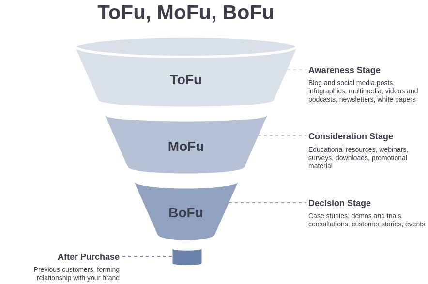

In today's competitive business world, having a solid digital marketing strategy is essential for any company's success. With the rise of social media and online advertising, businesses must understand the different stages of the customer journey to effectively attract, nurture, and convert leads into customers.
One strategy that has gained significant traction in recent years is the use of the TOFU, MOFU, and BOFU framework. These acronyms stand for top-of-funnel, middle-of-funnel, and bottom-of-funnel, respectively. This framework is a way to break down the different stages of the customer journey into manageable parts, allowing businesses to focus on specific goals and tactics for each stage.
In this blog post, we will delve deeper into the power of TOFU, MOFU, and BOFU and how they can be used to attract attention, generate leads, and drive conversions.

TOFU: Attracts Attention
The top of the funnel (TOFU) is where potential customers first become aware of your brand. At this stage, your goal is to attract attention and create brand awareness. The best way to do this is by creating valuable content that resonates with your target audience.
Content marketing is an effective strategy for TOFU. By creating blog posts, videos, podcasts, and social media posts that are informative and engaging, you can attract potential customers to your website and social media channels. SEO (search engine optimization) is also important for TOFU. By optimizing your website and content for relevant keywords, you can increase your visibility on search engines and attract more traffic to your website.
MOFU: Generates Leads
The middle of the funnel (MOFU) is where potential customers have shown some interest in your brand and are considering becoming a lead. At this stage, your goal is to generate leads and provide them with the information they need to make a purchase decision.
Lead magnets are a great way to generate leads at the MOFU stage. A lead magnet is a piece of valuable content that you offer in exchange for a potential customer's contact information. This could be an ebook, whitepaper, or webinar. By offering something of value, you can entice potential customers to provide their contact information and become a lead.
Email marketing is also important for MOFU. By sending targeted and personalized emails to leads, you can provide them with the information they need to move closer to a purchase decision. Email campaigns can include content such as product demos, case studies, and customer testimonials.
BOFU: Drives Conversions
The bottom of the funnel (BOFU) is where potential customers have decided to make a purchase decision. At this stage, your goal is to drive conversions and turn leads into customers.
One effective strategy for BOFU is retargeting. Retargeting allows you to show ads to people who have previously visited your website or interacted with your brand. By showing targeted ads to people who have already shown interest in your brand, you can increase the likelihood of a purchase.
Another strategy for BOFU is social proof. Social proof is the idea that people are more likely to make a purchase if they see that others have had a positive experience with your brand. This can include customer reviews, testimonials, and social media posts.
Conclusion
The TOFU, MOFU, and BOFU framework is a powerful tool for any business looking to create a successful digital marketing strategy. By understanding the different stages of the customer journey and focusing on specific goals and tactics for each stage, you can attract attention, generate leads, and drive conversions.
To be successful in today's competitive business world, it is essential to have a solid digital marketing strategy. By incorporating the TOFU, MOFU, and BOFU framework into your marketing strategy, you can create a roadmap for success and increase your chances of converting leads into customers.
It's important to note that the customer journey isn't always linear, and potential customers can enter and exit the funnel at different stages. As such, it's essential to have a holistic approach to your digital marketing strategy and ensure that you're engaging with potential customers at every touchpoint.
In conclusion, the power of TOFU, MOFU, and BOFU lies in their ability to break down the customer journey into manageable parts and allow businesses to focus on specific goals and tactics for each stage. By attracting attention at the top of the funnel, generating leads in the middle, and driving conversions at the bottom, you can create a successful digital marketing strategy and turn potential customers into loyal customers.
Read next: Navigating the Intersection of Marketing 4.0 and the Modern Customer Journey; 10 Essential Steps to Create an Effective Online Marketing Strategy for B2C Success; 10 Proven Ways to Boost Traffic to Your eCommerce Website. If you want help putting this into practice, see our growth consulting.